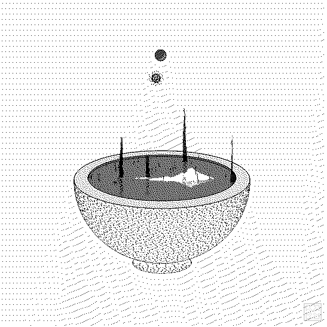

Robotic Arts Intro Fall 2017 (IA277.01)
- Instructor: Lucas Haroldsen (lharoldsen@mica.edu)
- Class Site: yasunaga.work/raif17
- syllabus: syllabus.pdf
- Resources: links.html
10/24: Project 1 Presentation
Today is critique day for Project 1. We will be spending most of the day looking and talking about your works!
Schedule
- Set up time (30min)
- Critique
- Critique
- Let's talk about Documentation
dinner
Visiting Artist: Katie Rose Pipkin

still image from generative landscape mirror lake
We have a visiting artist Katie Rose Pipkin on
Wednesday October 25th
2:30-3:30pm at Dolphin 2F
the myth of sisyphus as told by camus as reinterpreted by roomba
Documentation
Documenting your work is an important part of communicating your ideas to larger audiences through different time, place and context.
Consider:
- Medium to use for documentation (photography, video, text, audio, html page, theater, research paper, storytelling, book, zine, instructions..... )
- What aspect of your piece that you want to communicate
- Style (description, narrative, theatrical, comercial
- how and where to share your work
Burrowing Documentation Equipment
You can check out Camera, Video camera, Audio recorder, lighting kit and more from AV department. You can check hours here. You can reserve and check out equipment online at webcheckout
Camillie Utterback & Romy Achituv - Text Rain, 1999
Racheal Yalisove
Peter Ablinger
Zimoun
niko dama
Interplay by Allan Doyle and Ash Turner
rolly toy by Hayley Martell
The Way Thing Go
HOMEWORK
Project 1: Documentation Due October 31st
-
Upload following to a folder named "Project 1" in class google drive:
- 2 photos or 1 short video of your work
- One paragraph description of your piece
- arduino sketch .ino file
- exported .png file form fritzing